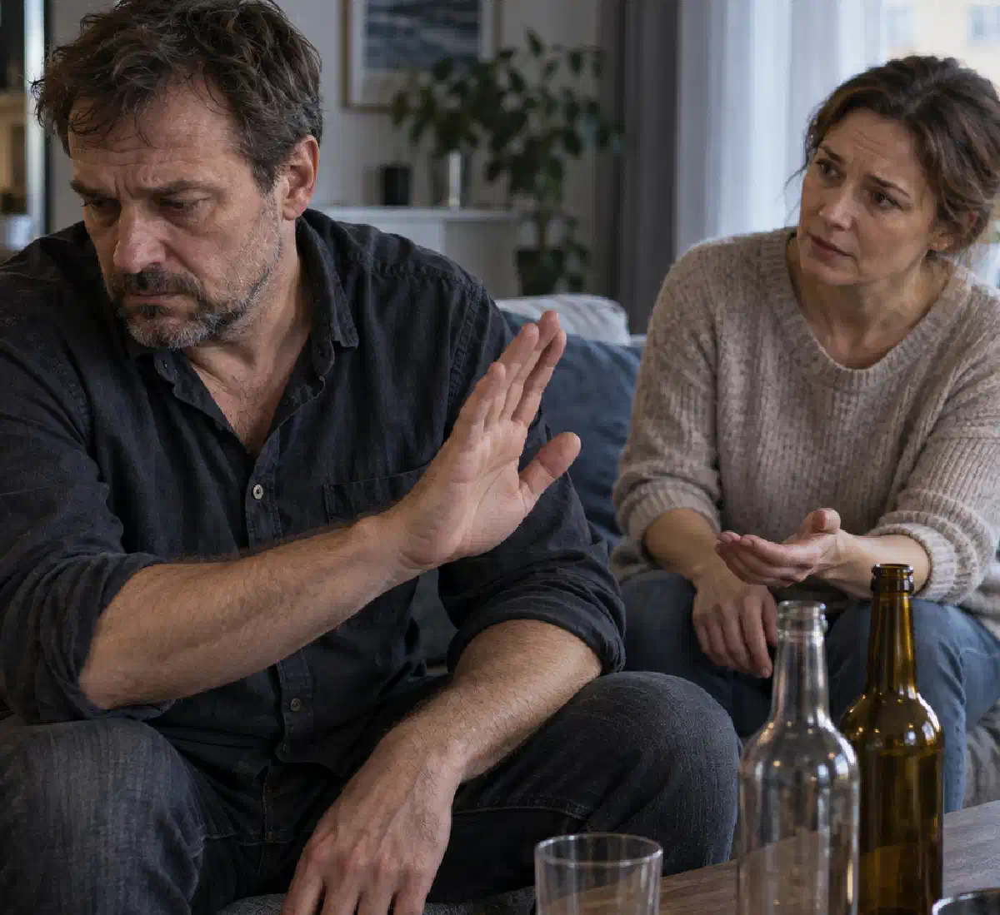

+38(068) 79 72 782
+38(068) 79 72 782Що робити, якщо людина в запої відмовляється від допомоги
Поради нарколога близьким


Безкоштовна консультація, працюємо цілодобово 24/7
Поради нарколога близьким

Дата написання: 20 вер. 2026 р.
Останнє оновлення: 20 вер. 2026 р.
Коли близька людина продовжує пити й відмовляється звертатися до лікаря, родичі часто відчувають страх, злість і безсилля. Умовляння можуть переходити у сварки, а обіцянки припинити вживання — залишатися невиконаними. У такій ситуації важливо розділити два завдання: оцінити безпосередню небезпеку та запропонувати доступний крок до лікування. Допомога людині в запої починається з уваги до її стану та безпеки сім’ї. Спокійна розмова може допомогти, але при порушенні свідомості, судомах або проблемах із диханням необхідно одразу викликати екстрену допомогу.
Негайно телефонуйте 103 або 112, якщо людину неможливо розбудити, вона погано дихає, з’явилися судоми, виражена сплутаність свідомості, галюцинації, сильний біль у грудях або блювання з кров’ю. Погрози самогубством і небезпечна поведінка також потребують термінового реагування. Екстрену допомогу при алкогольній інтоксикації не можна відкладати заради вмовлянь. Повідомте диспетчеру про симптоми й те, що людина відмовляється від допомоги. За відсутності свідомості та нормального дихання виконуйте інструкції з реанімації; людині з порушеною свідомістю не можна давати пиття або ліки через рот.
Для обговорення лікування обирайте час, коли людина здатна розуміти звернену до неї мову та підтримувати розмову. Сильне сп’яніння, виражене збудження або сонливість роблять змістовну бесіду малоймовірною. Краще розмовляти спокійно, без сторонніх і сімейних зборів. Почніть із короткого запитання про самопочуття та готовність обговорити допомогу. Водночас чекати на відповідний момент допустимо лише за відсутності небезпечних симптомів. Якщо стан погіршується, пріоритетом стає медична допомога при запої, а не продовження розмови.
Говоріть про конкретні спостереження та власне занепокоєння: людина кілька днів п’є, погано їсть, не спить, відчуває тремтіння або слабкість. Уникайте оцінок характеру та спроб довести, що вона «сама в усьому винна». Запропонуйте зрозумілу дію: зателефонувати лікарю, обговорити симптоми або погодитися на огляд. Консультація нарколога може стати першим кроком, який легше прийняти, ніж розмову про тривалу реабілітацію. Залишайте можливість ставити запитання та обговорювати варіанти, не обіцяючи заздалегідь певного формату лікування.
Підійдуть прості фрази: «Я бачу, що тобі важко, і хвилююся за твоє здоров’я», «Давай спочатку дізнаємося в лікаря, як безпечно вийти із цього стану», «Я можу допомогти записатися й поїхати з тобою». Корисно запитати: «Що тебе найбільше стримує?» і дати людині відповісти. Не потрібно за одну розмову домогтися визнання залежності. Іноді достатньо згоди на медичну оцінку. Уникайте обіцянок, що все закінчиться однією процедурою або що лікар обов’язково дозволить залишитися вдома.
Суперечка про слова «алкоголізм» і «залежність» часто відвертає увагу від того, що відбувається. Обговорюйте наслідки, які можна спостерігати: пропуски роботи, падіння, безсоння, погіршення харчування, повторні запої. Можна сказати: «Ми можемо по-різному оцінювати вживання, але зараз мене непокоїть твій стан». Діагностику та лікування алкогольної залежності проводить фахівець, а не родичі під час сварки. Якщо людина не готова обговорювати вживання, запропонуйте почати зі скарг на здоров’я. Водночас не потрібно приховувати від лікаря зв’язок симптомів з алкоголем.
За відмовою можуть стояти сором, попередній негативний досвід, побоювання щодо вартості або страх втратити контроль над рішеннями. Уточніть, чого саме людина боїться. Запропонуйте разом дізнатися, як проходить огляд, які варіанти допомоги доступні та як обробляються медичні відомості. Конфіденційна консультація нарколога дає змогу заздалегідь поставити ці запитання. Не обіцяйте повної відсутності документації та не гарантуйте, що госпіталізація не знадобиться. Чесне обговорення умов допомагає зберегти довіру й уникнути відчуття обману.
Звинувачення, приниження, публічні викриття та розмови одразу з кількома родичами можуть посилювати захисну реакцію. Не варто порівнювати людину з іншими, вимагати негайної клятви або використовувати дітей як засіб тиску. Небажано запрошувати лікаря обманом, представляючи його знайомим. Мотивація до лікування алкогольної залежності ґрунтується на зрозумілих пропозиціях і шанобливому спілкуванні. Це не означає необхідності погоджуватися з небезпечною поведінкою: спокійний тон сумісний із чіткими межами та викликом екстрених служб у разі загрози безпеці.
Повторювані обіцянки без змін — привід перейти від загальних домовленостей до конкретного кроку. Замість «більше ніколи не пий» запропонуйте сьогодні зв’язатися з лікарем або узгодити час консультації. Труднощі з припиненням вживання можуть бути пов’язані з потягом, страхом погіршення самопочуття та синдромом відміни. Лікування запійного алкоголізму потребує оцінки цих причин. Не беріть на себе роль цілодобового контролера й не перетворюйте кожну порушену обіцянку на новий конфлікт. Вирішіть заздалегідь, яку допомогу ви готові надати й чого не робитимете.
Якщо агресія наростає, припиняйте суперечку, зберігайте дистанцію та можливість вийти. Не перекривайте людині шлях, не намагайтеся відбирати предмети силою й не залишайтеся поруч заради продовження вмовлянь. У разі погроз або насильства перейдіть у безпечне місце й телефонуйте 102 або 112. Якщо водночас є ознаки невідкладного медичного стану, повідомте про них диспетчеру. Допомога при небезпечній поведінці під час запою починається із захисту людей. Обов’язок підтримувати близьку людину не вимагає наражати себе на ризик.
Дітям не слід доручати контроль за дорослим, який п’є, передачу ліків або спроби переконати його лікуватися. Якщо вдома небезпечно, організуйте перебування дитини з надійним тверезим дорослим. Поясніть простими словами, що дитина не винна в тому, що відбувається, і вирішувати ситуацію мають дорослі. Заздалегідь продумайте, куди можна піти й кому зателефонувати, якщо обстановка погіршиться. Підтримка сім’ї при алкогольній залежності включає безпеку літніх родичів та інших вразливих членів сім’ї, а не лише допомогу людині, яка вживає алкоголь.
Родич може самостійно звернутися по пораду й описати ситуацію. Лікар допоможе визначити, які симптоми потребують термінового виклику, яку інформацію зібрати та як запропонувати обстеження. Консультація для родичів залежної людини корисна навіть у разі відмови пацієнта брати участь у розмові. Однак за чужою розповіддю неможливо повноцінно обстежити людину або підібрати їй безпечну схему ліків. Така консультація також не дає родичам права отримувати медичні відомості про пацієнта без відповідних підстав або розпоряджатися його лікуванням.
Фахівець з’ясовує ставлення людини до вживання, її побоювання та цілі. Обговорення може починатися з того, що непокоїть самого пацієнта: поганого сну, конфліктів, втрати працездатності або страху перед абстиненцією. Мотиваційна бесіда при алкогольній залежності допомагає дослідити суперечність між бажаним життям і наслідками вживання. Вона не повинна перетворюватися на погрози або обіцянку «зламати заперечення». Результатом може стати згода на невеликий наступний крок. Гарантувати рішення про лікування після однієї зустрічі неможливо.
Зв’язатися з медичною організацією та описати ситуацію можна, але заздалегідь повідомте, що людина відмовляється від огляду або процедур. Виклик нарколога додому сам собою не означає дозволу на лікування проти волі пацієнта. Якщо людина здатна розуміти інформацію та ухвалювати рішення, фахівець обговорює допомогу з нею й отримує необхідну згоду. Не слід організовувати несподіване примусове втручання. За ознак загрози життю телефонуйте 103 або 112: екстрена бригада оцінить стан і визначить дії в межах закону.
Приховане введення препаратів небезпечне непередбачуваною дозою, взаємодією з алкоголем і відсутністю медичного контролю. Особливо ризикованими є заспокійливі, снодійні та засоби, що спричиняють реакцію на спиртне. Лікування алкоголізму без відома пацієнта може призвести до тяжкого отруєння та зруйнувати довіру до близьких і лікарів. Не використовуйте «краплі від алкоголю» за порадами з реклами або від знайомих. Якщо препарат уже дали таємно й стан погіршився, негайно повідомте медикам його назву, кількість і час приймання.
При фізичній залежності різке скорочення або припинення вживання може спричинити алкогольну абстиненцію. Можливі тремтіння, пітливість, тривога, нудота та безсоння, а при тяжкому перебігу — судоми й делірій. Безпечний вихід із тривалого запою потребує оцінки ризику, особливо якщо подібні ускладнення вже траплялися. Не складайте самостійно схему зменшення вживання алкоголю та не підбирайте седативні препарати. Зверніться по медичну допомогу для організації припинення вживання; при сплутаності свідомості, галюцинаціях або судомах викликайте швидку.
Згода на обмежену допомогу може стати початком контакту з лікарем. Поясніть, що спочатку потрібен огляд: крапельниця при запої призначається за показаннями й не замінює лікування абстиненції або залежності. Не обіцяйте, що однієї інфузії буде достатньо чи що процедура обов’язково можлива вдома. Лікар може рекомендувати інший підхід або госпіталізацію. Після стабілізації запропонуйте окрему консультацію щодо профілактики повторних запоїв, не перетворюючи згоду на огляд на умову негайно ухвалити всі подальші рішення.
Попросіть лікаря зрозумілими словами пояснити причину направлення, можливі ризики відмови та те, яку допомогу неможливо забезпечити вдома. Уточніть, що саме заважає пацієнту: страх, вартість, робота, турбота про тварин або попередній досвід. Частину побутових перешкод близькі можуть допомогти усунути. Госпіталізація при тяжкому запої обговорюється з урахуванням стану людини та її здатності ухвалювати рішення. Не намагайтеся самостійно зв’язувати або силоміць перевозити пацієнта. При погіршенні викликайте екстрену допомогу й повідомляйте про раніше рекомендовану госпіталізацію.
В Україні медичне втручання за загальним правилом потребує інформованої згоди. Стаття 43 Основ законодавства України про охорону здоров’я передбачає виняток за ознак прямої загрози життю та об’єктивної неможливості отримати згоду пацієнта або його законного представника. Сама відмова лікуватися або факт вживання алкоголю не створює автоматичного права на примус. Підстави для допомоги без згоди оцінюють фахівці; для окремих ситуацій існують спеціальні правові процедури. Екстрена медична допомога спрямована на усунення безпосередньої небезпеки й не означає дозволу родичам самостійно організовувати примусове лікування.
Межі краще формулювати через власні дії: «Я допоможу звернутися до лікаря, але не даватиму грошей на алкоголь», «У разі погроз я припиню розмову й піду в безпечне місце». Обирайте домовленості, яких справді зможете дотримуватися. Психологічна допомога родичам залежних допомагає відокремити підтримку від спроб повністю керувати чужою поведінкою. Не використовуйте відмову в екстреній допомозі як покарання. Водночас ви маєте право захищати свій сон, гроші, роботу та безпеку, навіть якщо близька людина поки не готова лікуватися.
Запишіть тривалість вживання, приблизну кількість алкоголю, час останнього вживання та поточні симптоми. Підготуйте відомості про захворювання, алергії, ліки, попередні судоми та епізоди делірію. Для планового звернення знадобляться документи й медичні виписки, але їх пошук не повинен затримувати екстрений виклик. Підготовка до консультації нарколога також включає організацію безпечної дороги: людині у стані сп’яніння не можна сідати за кермо. Уточніть, чи хоче вона присутності близької людини на прийомі, і допоможіть передати лікарю достовірну інформацію.
Після поліпшення стану важливо обговорити подальше спостереження та лікування, а не вважати проблему остаточно розв’язаною. Лікування алкогольної залежності після виведення із запою може включати психотерапію, медикаментозну допомогу за показаннями та план дій у разі повернення потягу. Підтримуйте відвідування лікаря й виконання узгоджених рекомендацій, відзначайте конкретні зусилля людини. Уникайте постійних допитів і вимог довести тверезість. При новому погіршенні самопочуття потрібна медична оцінка, а при відновленні вживання — перегляд плану допомоги без приниження.
Звернутися можна до психолога або психотерапевта, який працює із сім’ями людей із залежністю, а також до груп підтримки родичів. Якщо з’явилися стійка тривога, безсоння або виснаження, обговоріть власний стан із сімейним лікарем. Допомога близьким людини з алкогольною залежністю потрібна незалежно від того, чи погодилася вона на лікування. На консультації можна скласти план безпечної поведінки, підготувати розмову та визначити особисті межі. Вам не потрібно чекати наступної кризи, щоб подбати про себе й отримати підтримку.

Статтю перевірено експертом
Робулець Ольга
Лікар-нарколог, ординатор
Можливо цікава стаття:
Чи можна померти від пиятики

Так, ми суворо дотримуємося повної конфіденційності на всіх етапах лікування. Інформація про пацієнта, діагноз та проходження терапії не передається третім особам. Звернення до нас не тягне за собою постановку на облік. Ви можете бути впевнені у безпеці та анонімності.
Програма лікування розробляється індивідуально після консультації з фахівцем. Враховуються вид залежності, її тривалість, фізичний та психологічний стан пацієнта. Такий підхід дозволяє підвищити ефективність терапії та знизити ризик зриву. Ми не використовуємо шаблонні рішення.
Так, ми супроводжуємо пацієнтів і після основного курсу лікування. Проводяться консультації, рекомендації щодо адаптації та профілактики рецидивів. За потреби можлива подальша психологічна підтримка. Це допомагає зберегти результат та повернутися до повноцінного життя.
Номер телефону:
+380 (68) 797 27 82
+380 (50) 021 69 57
Адресу наркологічного центра вашого міста уточнюйте за
телефоном
Працюємо: Київ, Одеса, Львів, Харків, Дніпро, Запоріжжя,
Черкасах, Чугуєві, Чорноморську, Кам'янському
Telegram: t.me/umbrellaplus
Графік работы: Цілодобово